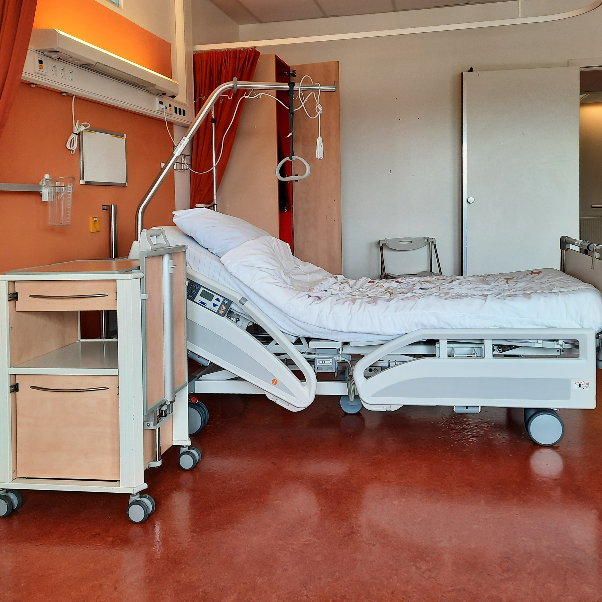
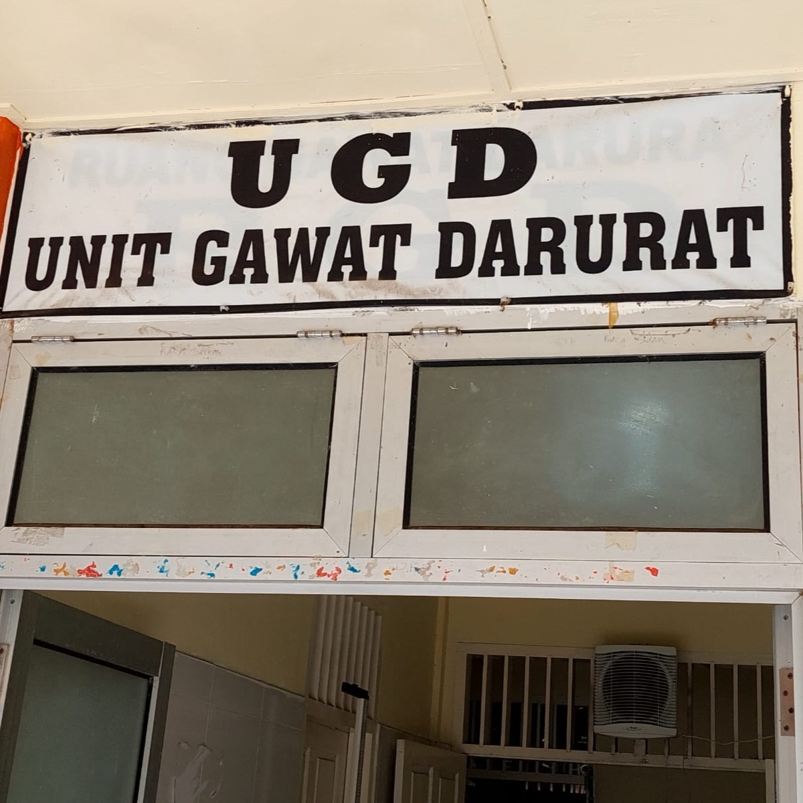

Fasilitas

RUANG INAP NYAMAN
RUANG OPERASI YANG MEMADAI

UNIT GAWAT DARURAT

TOILET NYAMAN
Lihat Selengkapnya
Menerapkan sistem manajemen berbasih teknologi jaringan
Kesinambungan pelayanan yang dilakukan mulai dari perawatan sampai pasien pulang ke rumah oleh tim home care multi-profesi
Seluruh klien dikaji berdasarkan riwayat penyakit dahulu, keluarga, dan pola hidup
Mengembangkan kolaborasi interprofesional dalam pelayanan, riset bidang kesehatan, serta pengabdian masyarakat
RUANG INAP NYAMAN
RUANG OPERASI YANG MEMADAI
UNIT GAWAT DARURAT
TOILET NYAMAN
Saya mendapatkan pelayanan yang luar biasa dari para tenaga kesehatan di sini, Alhamdulillah saya sembuh dari asam urat.
Saya berhasil sembuh dari penyakit saya setelah beberapa bulan berobat di RSUD Indramayu
Pelayanan di RSUD Indramayu sangat memuaskan
Setelah beberapa bulan berobat di sini, saya bisa kembali beraktivitas dengan normal